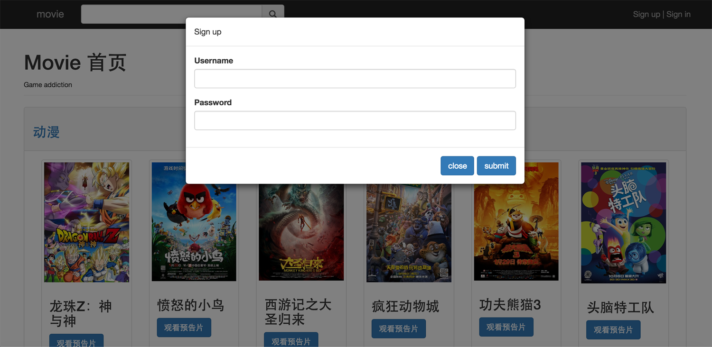

-
- Basic info. 基本信息
- 个人信息: 陈育君 / 男 / 24岁
- 教育经历: 本科 / 佛山科学技术学院计算机系 / 2014年应届生
- 英语水平: CET-4
- 常用ID: ioopsd
- Blog: ioopsd.cn
- GitHub: www.github.com/chickencyj
-
- Experience. 项目与工作经验
北京力尊信通科技有限公司（2015.7 - 2016.3）
-
F5负载均衡
参与过湖南省移动ADN改造,南车电机网络改造,安琪酵母网络升级等项目,主要负责f5负载均衡产品的实施部署（包括服务器负载均衡，链路负责均衡以及数据中心的负载均衡），售后维护，产品和技术测试
个人项目
-
Blog-by-nodejs（2016.7） 源代码(内有详细文档说明)
基于express+mongoose+jquery+bootstrap+ES6+webpack+ejs搭建的多人博客社区

-
movieDemo-by-nodejs（2016.6） 源代码
基于express+mongoose+jquery+bootstrap+jade搭建的电影社区demo
 -
gallery-by-react（2016.5） 源代码
基于React+webpack+grunt+sass编写的画廊demo(素材来自慕课网)

-
dialog-by-jquery（2016.4） 源代码
基于jquery+RequireJS模块化编写的弹窗组件demo,可自定义大小,提示消息的内容,标题,按钮内容,自定义是否有遮罩层,是否有关闭按钮,是否可拖拽,是否只可拖拽头部(head),可自行更换皮肤(class)

-
仿百度云Demo（2016.4） 源代码 Demo
基于原生js编写,通过伪造数据以及链表结构实现了文件夹的嵌套,拖拽移动文件夹,拖拽区域选中文件夹,新建文件夹,多个文件夹的复制,移动以及删除,通过递归实现面包屑导航以及动态生成的文件夹树状结构。

-
自定义版2048Demo（2016.3） 源代码 Demo
基于canvas以及原生js编写(慕课网素材)

-
贝塞尔三次曲线（2016.3） 源代码 Demo
基于canvas以及原生js编写

-
canvas版倒计时（2016.1） 源代码 Demo
基于canvas以及原生js编写(慕课网素材)

-
- Skill. 技能清单
Web前端
-
HTML / CSS
能够编写语义化的 HTML，模块化的 CSS，完成较复杂的布局
了解 Sass 等CSS预处理和后处理方法、工具,能使用Sass预编译工具编写CSS。
了解HTML5以及CSS3常用功能
-
JavaScript
熟悉原生Javascript，能脱离jQuery等类库编码
日常使用原生JS,Jquery,Bootstrap进行前端代码编写
在项目中使用过RequireJS以及CommonJs等模块化解决方案
在项目中使用过ES6并通过Webpack集成Babel编译以及打包压缩
了解React库以及MV*框架
了解常用的设计模式
-
其他
熟悉Jade,Ejs等常用模板,能使用Mocha编写简单的单元测试
了解 Yeoman Bower webpack Gulp 前端自动化工具
在项目中使用过Webpack对前端代码进行打包压缩
了解前端安全、性能优化方面的一些知识
后端
-
环境
熟悉 Mac OS X 开发环境
-
语言
了解Express框架以及Mongoose,了解NodeJs核心模块,在项目中使用过Express以及Mongoose搭建后端与数据库交互,渲染模板以及提供Api
了解 C,能编写简单的解释器
了解C++,读过《C++ Primer Plus》,接触过cocos2d-x游戏框架
了解HTTP(1.x/2),TCP/IP等网络协议。
其他
-
静若处子，动若脱兔，喜欢音乐
学习能力强，以上绝大多数的技能都是工作时自学修得
了解 Git 等多人协作开发工具的使用
能够熟练使用 Markdown 进行写作

陈育君的简历
"Play and have fun."
-
- Contact. 联系方式
- 手机: 13620117760
- 邮箱: 280929083@qq.com
- 微信: 膝盖你在哪
- QQ: 280929083
-
- Application. 应聘岗位
- 前端工程师
-
- Tech. 技能点
JavaScriptHTMLCSSNodeJSCC++
我目前正在寻找前端工程师岗位，希望借此机会为贵司献上我的一点绵薄之力，快招我到碗里来吧！